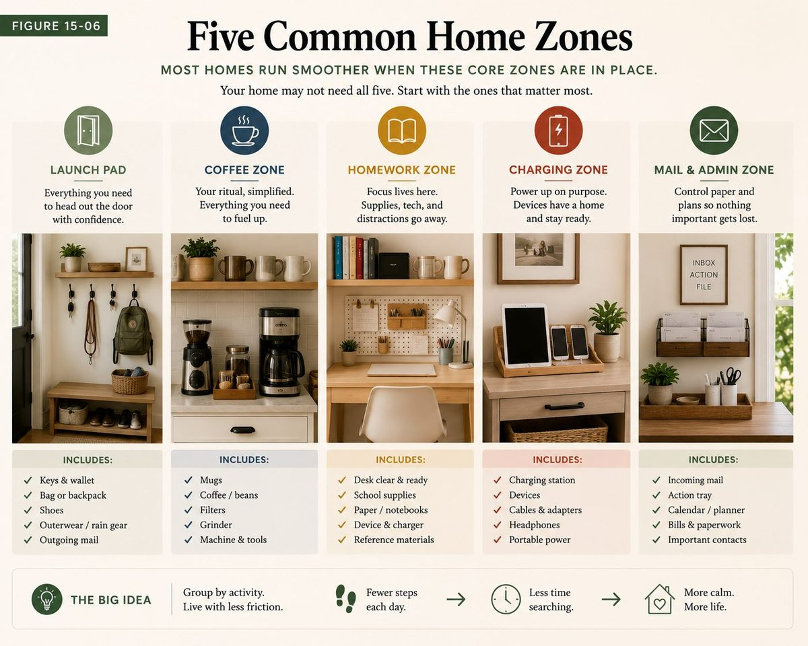

Basements, finished or not
How to organize a basement, one zone at a time
Organize a basement as five or six small zones rather than one big room, and start with the zone that keeps the house running: the clear space around the furnace, water heater, electrical panel and sump. Then get everything off the bare floor, give each shelf one job, label every bin so it reads from the aisle, and date it so the next clear-out decides itself.
The short answer. Check for water before anything else. Then work six zones in order, one session each: the utility zone (kept completely clear), the stairs, long-term shelving, seasonal bins, household backstock, and whatever room you actually use down there. Buy storage only after the sort, and attach the upkeep to the furnace filter change, which already brings you downstairs.
Why a basement fills up
A basement is the room every other room sends things to. The kitchen evicts the bread maker, the closets evict last season, the kids' room evicts the toys they have outgrown, and all of it goes down the stairs with the same unspoken plan: deal with it later. Nothing in a basement ever asks to be reviewed. It is out of sight, usually dim, and nobody walks through it on the way to anywhere, so a deferred decision can sit there for a decade without once getting in anybody's way.
That is why a big weekend clear-out tends to fail here. The problem is not that the basement is messy, it is that it is several different jobs sharing one floor, and each of those jobs is failing for its own reason. The storage shelves have no assigned homes. The backstock has no reorder line, so you buy what you already own. The utility corner has boxes leaning on the water heater, which is not a tidiness problem at all, it is unsafe placement. One big tidy cannot fix four different causes. Splitting the room into small zones can.

First, check for water
Before anything gets organized, find out whether the basement is dry, because every decision below depends on it. Walk the perimeter with a flashlight and look for three things: dark stains or tide lines low on the walls, a white powdery crust on the concrete (mineral left behind by water moving through it), and a musty smell that does not clear when the door is open. Look under anything that has been sitting on the bare floor for a while.
If you find active water, stop organizing and deal with that first. Storage cannot fix a leak, and a well-organized wet basement just ruins things in neater rows. Cracks, seepage and drainage are a job for a professional. If the space is merely damp, the US Environmental Protection Agency recommends keeping indoor humidity below 60 percent, ideally between 30 and 50; a dehumidifier sized for the space, emptied or drained as its manual says, does most of the work.
The six zones of a typical basement
Not every basement has all six, and a finished one will look different from bare concrete, but almost every basement is some combination of these. Work one per session, in this order. The order matters: the first zone is the one that keeps the house running, and the second is the path everything else travels along.
1. The utility zone: keep it clear
The furnace, the water heater, the electrical panel, the sump pit if you have one, and the main water shutoff. This is the one zone in the house whose standard is nothing stored here at all, because the day you need it is the day you will not have time to move boxes out of the way.
- Sort. Everything that is not part of the equipment comes out. Spare filters can stay if they have their own shelf nearby, not leaning on the unit.
- Straighten. Leave a clear path from the stairs to the panel, the water shutoff and the sump. You should be able to reach each one in the dark without moving anything.
- Shine. Vacuum around the base of the furnace and water heater and look while you do it: rust, a puddle, or scorch marks are things to report to a technician, not to wipe away.
- Safety. Nothing flammable near a gas furnace or water heater: no paint, thinner, gasoline, aerosols or cardboard piled against it. The unit's own label and manual list the clearances it needs, and they differ between models, so read yours rather than guessing. Electrical codes generally call for about three feet of clear working space in front of a panel. Check that the basement has a working smoke alarm, and a carbon monoxide alarm if any appliance down there burns gas or oil.
- Standardize. Mark the keep-clear area on the floor with tape. A line on the concrete is the whole standard: nothing crosses it.
- Sustain. Attach the check to the furnace filter change, which already brings you down here a few times a year. Filter out, glance at the tape line, filter in.
One more thing worth doing while you are standing there: if your home has never been tested for radon, the EPA recommends testing every home, and the lowest lived-in level is where the test usually goes.
2. The stairs and the foot of the stairs
Basement stairs collect things waiting to go up or down, one per tread, until somebody carrying a laundry basket cannot see the step. The standard is bare treads, a working light switch at the top, a handrail you can grip all the way down, and a clear landing at the bottom. If things genuinely need to wait for the next trip, give them one basket at the top, not the steps themselves. The stair and floor path guide covers the same zone on the main floor, and the reasoning is identical.
3. Long-term storage shelving
This is the zone most people mean when they say "organize the basement", and it is the one that most rewards doing the first two before it.
- Sort. Bring every bin to the floor and open it before you judge it. Nobody sorts honestly at shoulder height with the lid half off. Each bin earns its place by answering one question: what is this for, and when was it last needed?
- Straighten. Freestanding shelving, with the lowest shelf up off the concrete so a small leak never reaches anything. Heaviest bins on the lowest shelf, lightest on top. Leave a few inches between the shelving and an exterior wall so air can move behind it.
- Shine. Wipe the lids. The dust on a lid tells you, honestly, how long it has been since anything came out of that bin.
- Safety. Tall shelving loaded with heavy bins should be anchored to the wall or rated stable on its own; follow the shelving's own instructions. Nothing heavy above head height.
- Standardize. Every bin gets a label you can read from the aisle, and the month and year it was last opened. Clear bins help, but a label still beats squinting through plastic.
- Sustain. Whenever a bin comes down and is opened, the new date goes on the end before it goes back. A bin whose newest date is two years old is the first candidate at the next clear-out.
This is the same standard as garage overhead storage, for the same reason: storage you rarely see needs to tell you its own age.
4. Seasonal and holiday
Group by the month things come out, not by what they are. The December bins sit together, nearest the stairs, so one trip brings the lights, the decorations and the wrapping supplies up together. Summer gear sits together at the other end. The test of this zone is simple: when a season starts, can you bring up everything it needs in one trip without opening a single bin to check?
5. Household backstock
The spare paper towels, the bulk cleaning supplies, the overflow pantry. This zone fails in two opposite directions, running out and overbuying, and both have the same fix: one shelf per category, one visible spare, and a reorder line. The full method is in why you keep running out of things, and the household backstock guide applies to a basement shelf exactly as it does to a closet. Food goes off the floor and away from the furnace's heat, oldest at the front.
6. The room you actually use
Many basements also hold a laundry, a workshop, a playroom or a family room. Those are real rooms with their own zones, and each already has a full guide on this site: the laundry room, starting with the washer and dryer; the workshop, starting with the main workbench; and the family room, where the toy and play zone is usually the one that has spread. Draw a line on the floor between the room you use and the storage you do not, and keep storage from creeping across it.
The box nobody has opened
Every basement has at least one box that came with you in the last move and has not been opened since. It stays because opening it costs an afternoon and might cost more than that. Here is what settles it. Open it on the floor with three things beside you: a trash bag, a donation box, and one empty bin. What you truly want to keep must fit in that one bin and must have a living person's name attached to it. Anything with no owner leaves today. A box that goes back on the shelf unopened has just bought itself another five years. If the box is full of things that are hard to let go of, here is how to decide about sentimental items without the guilt.
An unfinished basement
Bare concrete and open joists change a few things. Cardboard on concrete wicks moisture and invites pests, so anything stored long term goes in lidded plastic bins, off the floor. Open joists look like free hanging space, but do not hang anything heavy from them, cut or drill them, or screw storage into them without knowing what they carry; that is a question for a contractor. Keep any window that could be used as an emergency exit completely clear, inside and out. And light it properly: a dim basement is how a decision gets deferred, because you cannot judge what you cannot see.
On a budget
The cheapest basement organization is the order above, because sorting first is free and it tells you exactly how much storage you actually need. Buy bins and shelving after the sort, not before, and buy for what survived it. Reuse the bins you already own once they are emptied. Tape on the floor costs almost nothing and does more for the utility zone than any product. The longer argument is in why more storage will not fix a messy room.
Keeping it that way
A basement does not drift back because people are careless. It drifts back because it is the one room that never asks to be checked. So give it a written standard and attach the check to things that already bring you downstairs:
- The standard. Nothing on the bare floor, nothing inside the tape around the utility zone, every bin labeled and dated, stairs bare.
- The triggers. The furnace filter change, the first day of each season when the seasonal bins come up, and every time something new is carried down. That last one is the hard one: a thing carried down needs a home before it is put down.
Common questions
How do I organize a basement with a lot of stuff?
Split it into small zones and do one per session instead of attacking the whole room. Start with the utility zone around the furnace, water heater, panel and sump, because it has to be clear. Then get everything off the bare floor, sort one shelf or one category of bins at a time, and only buy storage once you know what survived the sort.
What should you not store in a basement?
Anything that cannot tolerate damp, stored on the floor or in cardboard: paper documents, photographs, fabric and books. Nothing flammable, such as paint, thinner, gasoline or aerosols, near a gas furnace or water heater. No food directly on the floor or beside the furnace. And nothing at all in front of the electrical panel, the water shutoff, the sump pit, or a window that could be used as an emergency exit.
How do I organize an unfinished basement?
Treat the concrete as damp until you have checked it. Use freestanding shelving with the lowest shelf off the floor, lidded plastic bins instead of cardboard, and keep shelving a few inches off exterior walls. Do not hang heavy storage from open joists without knowing what they carry. Mark a clear zone around the utilities with tape, and light the space well enough to see what you are deciding about.
What is the best way to store clothes in a basement?
Only if the basement is dry. Wash and fully dry the clothes first, store them in lidded plastic bins rather than cardboard or open bags, keep the bins off the floor and away from the furnace and dryer vent, and label each bin with what is in it and the season it belongs to. Check them when the season changes; a musty smell means the space is too damp for fabric.
Should basement storage have doors or open shelving?
It depends on what you need to see. Open shelving shows you what you have, which matters for backstock you reorder and seasonal bins you rotate. Cabinets with doors keep dust off and look calmer, but they hide what is inside, which is how duplicates get bought. A good split is open shelving for anything you check or restock, doors for things you want out of sight and rarely touch.
How do I organize a basement on a budget?
Sort first, because sorting is free and it tells you how much storage you actually need. Reuse bins you already own once they are emptied, buy shelving only for what survived the sort, and use floor tape to mark the keep-clear area around the utilities. The expensive mistake is buying storage before deciding what stays.
How much space should I leave around a furnace and water heater?
Check the label on the unit and its manual. Manufacturers list the clearances their equipment needs and they differ between models, so there is no single number that is right for every basement. Never store flammable items near a gas appliance. For the electrical panel, codes generally call for about three feet of clear working space in front of it. If you are unsure, ask the installer or a licensed technician.
Is a cellar the same thing as a basement?
Usually, for organizing purposes. In the US, basement is the common word for a home's lowest level; in the UK and in many older houses, that same space is often called a cellar. Everything on this page applies either way: check for damp first, keep the utility zone clear, then work one zone at a time.
Keep reading
- How to organize an attic without overloading it, the other room a house sends its overflow to, with a different set of safety rules
- The garage, zone by zone, the room with the most in common with a basement, and the same overhead storage standard
- Why tidy is not the same as safe, on unsafe placement, the root cause behind boxes leaning on the water heater
- Why you keep buying things you already own, the backstock problem a basement hides best
- All 20 rooms and 114 micro zones, each with its own root-cause diagnosis and standard
For the rooms a basement borrows
Laundry, workshop, backstock and bulk storage, zone by zone
There is no basement chapter in the Whole House Print Pack, and we will not pretend there is. What it does carry are the zones a basement is usually made of, the laundry, the workshop, household backstock and bulk storage, with the six passes and the standard for each, across all 114 zones, on cards you print at home, 19 dollars. Or walk the basement with us on a one hour virtual consult, 250 dollars, and leave knowing which zone to do first.
The Print Pack, 19 dollarsOr work a zone, freeTalk it through, 250 dollars